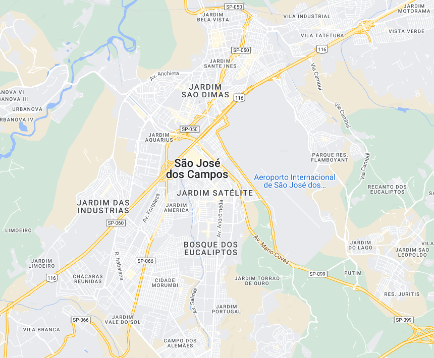

São José dos Campos - Geodex

Município de São José dos Campos
-
Populacão: 737.310 pessoas
-
Área: 1.099,409km²
-
Fundação: 27 de Julho de 1767
-
Distância da Capital: 93km
São José dos Campos é uma cidade que combina cultura, tradição e tecnologia. O núcleo urbano abriga institutos de pesquisa, empresas de tecnologia avançada, universidades e centros de formação profissional. Por outro lado, a zona rural ocupa a maior parte do território, com áreas de proteção ambiental. A cidade é o principal município da Região Metropolitana do Vale do Paraíba e um importante polo aeroespacial na América Latina. Além disso, preserva sua cultura local, influenciada pelos bandeirantes e tropeiros. Localizada estrategicamente entre São Paulo e Rio de Janeiro, São José dos Campos oferece fácil acesso a praias, serras e outros destinos turísticos. É reconhecida por seu potencial de negócios, impulsionando investimentos na área de hotelaria, comércio e serviços. A cidade equilibra desenvolvimento tecnológico e industrial com preservação ambiental, possuindo parques, praças e ruas arborizadas. Com origens que remontam ao século 16, São José dos Campos se desenvolveu ao longo do tempo, ganhando destaque na fase sanatorial e na industrialização. Atualmente, é um centro regional de compras e serviços, atendendo uma vasta população da região.